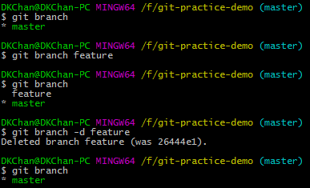
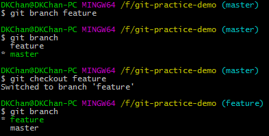
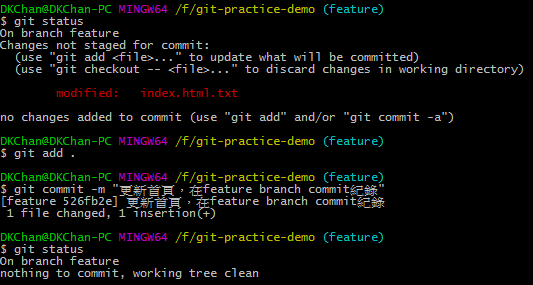
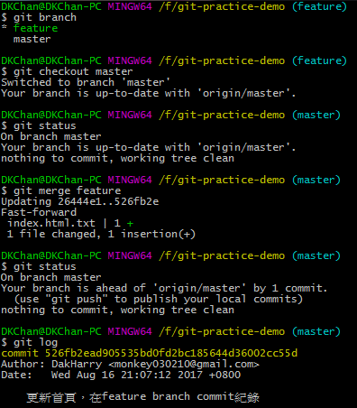
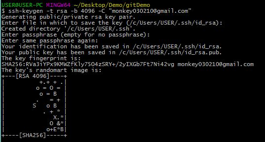
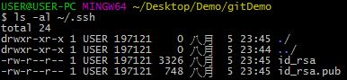
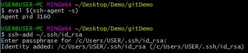
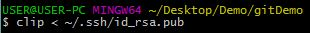
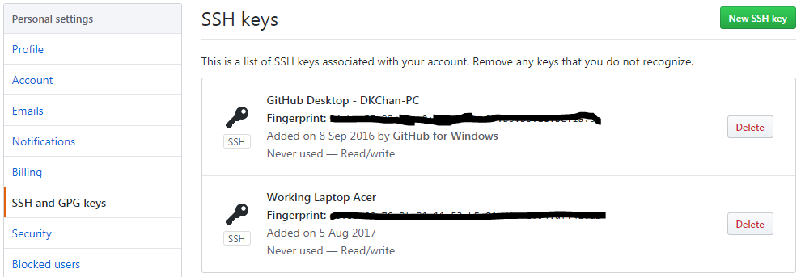
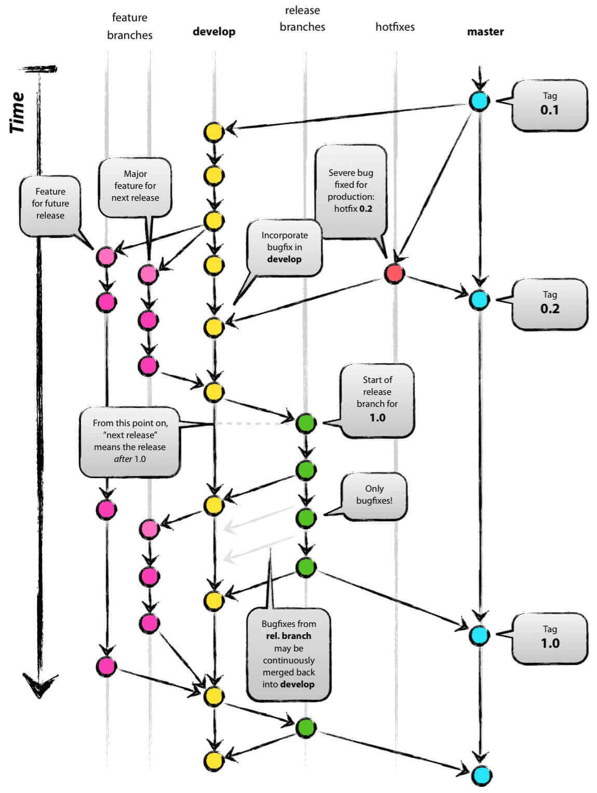

紀錄過程，減少恐慌的一步
為什麼要用Git?
以前在學校行政單位工讀時，時常需要將文件歸檔或更新文件內容，為了整理方便，都會在檔案上附註是幾年幾月幾日的版本，雖然從資料夾能得知最新的版本，但不會知道版本之間差異在哪。
在多人共同維護檔案的需求下，大家開始將檔案上傳到Google Drive等雲端平台，將版本更新的內容一樣按照日期的方式維護，卻很容易發生同時更改檔案卻不知道要依哪個版本為主或是誤蓋過其他人的檔案。
而Git提供了紀錄修改過程，來幫助你管理檔案，協助你解決多人共同編輯時常遇到的衝突。
運作模式
首先決定要記錄那些檔案和記錄檔案的資料夾存放位置，稱之為「工作目錄(Working directory)」，
指定工作目錄後，接下來，要告訴Git說我們要追蹤該資料夾底下的所有檔案變更。
透過指令「git init」，指定工作目錄後，他就會產生「.git」的資料夾，這個檔案會記錄所有
變更的內容，
如果任何情況變動發生時，例如:新增、刪除或修改檔案，Git都會記錄下來，
而接下來要做的事情就是，按照我們所期望的方式，管理資料夾的內容，但是，如果每一項變動都會記錄，
歷史紀錄就會變得雜亂不堪，因此，
Git在做紀錄前，會要求將要紀錄的檔案上傳到數據庫，這空間叫做「索引(Staging area)」，
在新增完要紀錄的變更內容後，我們就可以將修改的目的，透過「commit」指令，將說明寫在變更的內容上，並記錄到「本地數據庫(Local Repository)」，
最後透過指令「push」將本地數據庫的資料跟「遠端數據庫(Remote repository)」做更新，這樣就完成了簡單的版本控制了。
| 關鍵字 | 解釋 |
|---|---|
| 工作目錄(Working Directory) | 要進行版本控制的專案目錄 |
| 索引(Staging Area) | 透過索引可以將要進行版本控制的檔案新增到一個暫存區，以力跟不需要紀錄的檔案做區隔，並透過Commit的指令將檔案紀錄新增到本地數據庫。 |
| 本地數據庫(Local Repository) | 本地進行的版本紀錄都會儲存在該電腦中，如果要與多人協同開發，會再透過push，將本地的版本數據與雲端的數據庫做同步。 |
| 遠端數據庫(Remote Repository) | 協同開發為了保持所有團隊開發人員或者是後加入的開發者都能使用到最新的專案版本，可以透過遠端數據庫，下載至本地數據庫，進行分工開發。 |
版本控制需學習的內容
初步的運作模式了解以後，接著就是要學會怎麼輕鬆的操作了!
學習目錄
使用工具/軟體安裝

本地端數據庫管理指令
學習的指令概要
- git init
- git add .
- git commit -m "描述"
- git status
- git log
git init
資料夾一開始並不包含任何Git儲存庫，因此透過init指令，我們可以告訴Git說我們 要在此資料夾建立數據庫。
第一步，右鍵建立一個新的資料夾「git-practice-demo」，並在安裝完Git之後，開啟 「Git Bash」，並透過「cd "資料夾路徑"」將位置轉移到剛才新建的資料夾。
※可以透過滑鼠拖曳資料夾到git Bash的畫面之中，可以自動貼上資料夾本身的路徑。

轉移到目錄之後，輸入「git init」，git會產生「.git」資料夾， 此外，原本Bash上會多一個「master」的標記，這表示目前我們所在的紀錄點為master的線上， 也是本地端的主線。
git status
首先我們在目錄中建立兩個新的檔案「index.html」及「style.css」，並使用Staus來查看 Git追蹤資料夾的狀態。

第一行描述現在所在的位置是在「master」，Git發現目錄底下，有兩個未追蹤的檔案(Untracked files)， 並且git提示你要用git add指令來追蹤檔案。
git add
當工作目錄中，有新建、修改或刪除等紀錄，而我們要更新本地端數據庫的紀錄時，就必須先透過add 將要儲存的紀錄傳到「索引Staging」，來分辨哪些檔案要記錄哪些不用。

使用指令「git add .」，來追蹤新增的檔案，. 代表將所有有變更的檔案都加入追蹤。
如須指定特定檔案「git add index.html」在後面加入特定名稱即可。
接著再使用「git status」查看加入索引後的狀態，git表示有兩個新檔案(new file)建立索引，
接著可以透過commit來記錄的數據庫
git commit -m "描述"
當索引的內容都確定沒問題，接著輸入「git commit -m "第一次commit，建立index首頁及css檔案"」。 該指令能將索引的內容，全部儲存至數據庫，並且可以透過自訂描述，日後檢察紀錄時，知道每一個紀錄點做了什麼。
執行後，會顯是紀錄點的描述，及該紀錄點新增修改了哪些檔案。
再輸入一次「git status」，會發現原本在索引的檔案，在更新數據庫後，就變成空的了。
這樣是表示說，目前目錄與數據庫的紀錄，都是一致並且是最新的意思。
git log
用來查詢專案commit過的紀錄點。

commit每一次都會有一組hash過的字串，代表那一次commit的代號，當我日後想要回來看某一個版本時，
就可以指定代號來轉換，我要回去看某一時期的專案。
此外，還會標示作者是誰，修改的時間，及在commit時候註明的修改資訊，來達到基本的版本控制。
遠端數據庫管理指令
學習的指令概要
- 建立github 遠端數據庫空間
- git remote add 'name' 'url'
- git push
- git pull
- git fetch
建立github 遠端數據庫空間
到Github註冊帳號後，可以透過「New Repository」來建立遠端的數據庫，並用來管理專案的資料。
「Repository name」命名遠端數據庫的名稱，下一步點選「Create repository」。
建立後，會看到Github會給一些使用建議，他意思是我們可以選擇建立一個新的數據庫 並連到上面的遠端數據庫路徑，在將專案上傳遠端數據庫。 第二個方式是，直接連接遠端數據庫，並上傳既有的專案。 並回到Git Bash的介面中，以第二個上傳既有的專案到遠端數據庫作示範。
git remote add 'name' 'url'
用來建立遠端數據庫的連接，name放遠端數據庫的預設名稱(origin) ，url放遠端數據庫的網址。
git push '遠端數據庫名稱' '本地數據庫名稱'
將本地數據庫commit過的資料跟紀錄，更新到GitHub上遠端的數據庫，預設Bash如果沒有 另外設定授權，GitHub會要求登入，下面會提到解決辦法。
接著回到，GitHub剛建立的數據庫，並重新整理畫面

電腦上的專案成功上傳到GitHub上，並且可以讓其他開發者下載下來(clone)作協同開發。 並且可以在畫面上面看到幾個資訊， 「1 commit」表示專案目前進行了一次版本控制，點進去可以看到詳細的版控紀錄時間跟內容。 「1 branch」表示專案目前遠端數據庫有一條分支叫origin。 「1 contributor」表示專案目前協同合作的人數。
git pull
當專案有兩個人以上作開發時，當分配的功能完成，通常會需要更新專案， 以保持開發人員的程式版本保持最新的狀態，因此為了模擬當遠端數據庫有更新紀錄時， 可以透過Git Bash指令的pull，來抓取更新的紀錄，並更新本地端的資料。
點選Github頁面上「Create new file」，並新增一個「createbyother.html」，將檔案 直接Commit至數據庫，來模擬其他開發整更新紀錄的情境，並回到Git Bash輸入「git pull」， 將最新的版本記錄更新到專案裡。
輸入後，可以藉由「git log」，會發現commit的紀錄更新成與遠端一樣有2筆記錄，並且專案資料夾 也有在遠端建立的「createbyother.html」檔案，學到這邊，我們已經可以進行個人專案的版本控制。
git fetch
將遠端數據庫的紀錄，更新最新到本地數據庫的資料上，但不立即更新(merge)本地端專案的程式碼。
這樣的好處是，如果當如果遠端的程式做了修改並且如果同時更改同一個檔案，更新下來之後，可以察覺
是一段程式出了問題，確認完之後再透過「git merge」更新有衝突的檔案。
與「pull」的差別在於，pull隱藏了許多細節，「pull = fetch + merge」，一次性下載完數據庫並進行檔案的更新，
但這樣的缺點在於如果同樣的檔案出現了變更，程式自動合併，我們比較不好控制結果是不是如我們預期。
在從GitHub更新一次「createbyother.html」，在第二行新增字並commit完後，回到Git Bash輸入「git fetch」， 他會更新數據庫的紀錄，但打開網頁會發現資料是沒有寫入程式碼的。
接著輸入「git merge」，並重新整理一次網頁檔，會發現他將檔案更新到最新的狀態，透過分開的處理，我們可以很輕易的 去處理開發上發生版本衝突的情況，這樣更容易掌握與控制專案的內容。
多人協同開發
學習的指令概要
- git branch
- git checkout
- git merge
- git stash
git branch(分支)
分支讓我們在開發過程中，可以做更明確的版本維護， 當同時會有多人在開發或修復同一個功能時，需要針對每個版本進行維護， 因此透過branch的方式，讓紀錄更容易清楚的描述每個功能的開發過程。
「git branch」:可以查詢目前本地端有哪些支線，預設只有主線master。 「git branch 支線名稱」:建立支線。 「git branch -d 支線名稱」:刪除支線。
「git checkout 支線名稱」: 切換至指定的路線。
git merge
用來合併分支兩邊的數據紀錄，將分開開發的專案進度整合成一條最新的紀錄點。
當feature支線的功能開發完成時，需用新增一筆記錄，首先用「status」確定我們在分支(branch)上 ，並且我們有修改index.html.txt的檔案紀錄，接著按照前面提到的commit流程將紀錄上傳到數據庫上。
首先checkout回主線(master)，「status」會發現主線(master)目前跟遠端數據庫是一樣的進度， 因此我們接著要輸入「git merge 分支名稱」，將上面再分支(feature)寫的程式變更更新到主線上。 再用「status」看一次，紀錄會說本地端的紀錄比GitHub上的數據庫新，並用「log」的方式看到再分支「commit」的紀錄。
GitHub設定SSH授權本機電腦
學習的指令概要
- SSH key產生
- 將key 加入ssh-agent
- 複製ssh內容
- 貼至GitHub的SSH Key設定
SSH key產生
照著以下步驟，產生本機的SSH授權金鑰，並貼到GitHub上，讓GitHub同意授權連線的權限。
輸入「ssh-keygen -t rsa -b 4096 -C "GitHub信箱"」，接著按enter一次，會要求你輸入密碼 ，如果不需輸入就繼續按enter，系統會產生SHA256加密的公私鑰檔案。
再執行上面建立的位置，會產生「id_rsa」和「id_rsa.pub」兩個金鑰檔，接著我們要發送公鑰「id_rsa.pub」
輸入「$ eval $(ssh-agent -s)」，「ssh-add ~/.ssh/id_rsa」，接著複製ssh key到剪貼簿。
兩種方式，一個是透過語法「clip < ~/.ssh/id_rsa.pub」複製，另一個是開啟「id_rsa.pub」複製檔案的內容。
到GitHub後，點選個人設定「Setting」，接著點選「SSH and GPG keys」，點選 「New SSH key」，並將複製的金鑰貼到key，Title打自己能分辨是哪台電腦的授權就好。
好的分支模型(Git Branch)
以作者Vincent Driessen解釋的Branch圖來解釋。
(圖片來源: http://nvie.com/posts/a-successful-git-branching-model/ )
作者所分享的開發支線總共切成5條，包含master、hotfixes、release、develop和feature。
看起來很複雜，其實根本都是分支(branch)，就算只用一條分支，也可以做所謂的版控，但是可讀性就會有所差異。
以下介紹這幾種分支所代表的工作內容:
「master主線」:只紀錄可以發佈的版本。
「develop開發線」:開發功能過程的主線，功能Bug修正或新增必須在此線與功能線之間完成紀錄。
「feature功能線」:專案開發各個功能的版本會紀錄此支線。
「release發佈線」:當功能開發完成，且Bug修正完成的功能版本，準備發佈到正式版本記錄在此線。
「hotfixes快修線」:在發布的專案中，常有些非預期性或重大Bug需要緊急修正，且有時間壓力時，
為了解省時間修復功能的紀錄會放在這條線上，並更新版本給發佈線跟主線。
實作體驗開發過程
可以參考連結作者寫的流程練習]一个成功的Git分支模型
，他的流程很明確的將各個branch的職責分開來處理。
雖然有時候可能只是臨時修改某些檔案，但是為了方便，很容易讓版本控制變得好無章法，在多人共同維護上，沒有統一的版控規則，就更加容易造成版本控制上的混亂，因此，為了讓專案的開發過更明確，
寧可多做幾個步驟，也要遵循團隊雖制定版控規則。